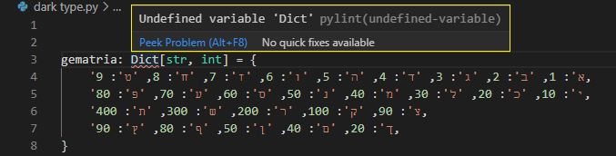
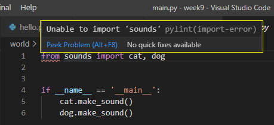
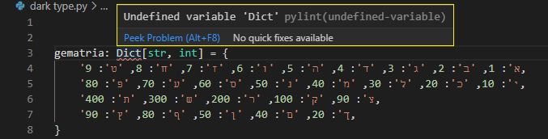
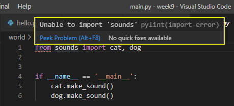

יש אצלי שגיאה שחוזרת על עצמה בסקריפטים שונים ואני לא מצליחה להבין מה הבעיה.
מצרפת דוגמאות לשגיאה.
כאן הוא למכיר את המילה Dict:

וכאן הוא מראה שיש בעיה ביבוא למרות שבהרצה הוא עובד מצוין ומוציא את הפלט הרצוי:

איך מתקנים את הבעיה?

יש אצלי שגיאה שחוזרת על עצמה בסקריפטים שונים ואני לא מצליחה להבין מה הבעיה.
מצרפת דוגמאות לשגיאה.
כאן הוא למכיר את המילה Dict:

וכאן הוא מראה שיש בעיה ביבוא למרות שבהרצה הוא עובד מצוין ומוציא את הפלט הרצוי:

איך מתקנים את הבעיה?
לגבי הבעיה הראשונה - ודאי שבתחילת הקוד את מייבאת את כל הטיפוסים הרצויים ממחלקת typing, במקרה שלך -
from typing import Dict.
הייתי ממליץ לך להרחיב מעט בנושא type annotations.
לגבי הבעיה השנייה - תנסי לפתוח מחדש את הפרוייקט, על ידי File < Open Folder ותבחרי את התיקייה של הפרוייקט. תעדכני אם זה עוזר
הצליח.
מעניין למה הוא מצביע על הבעיה ובחלון חדש היא נעלמת.
תודה אור!